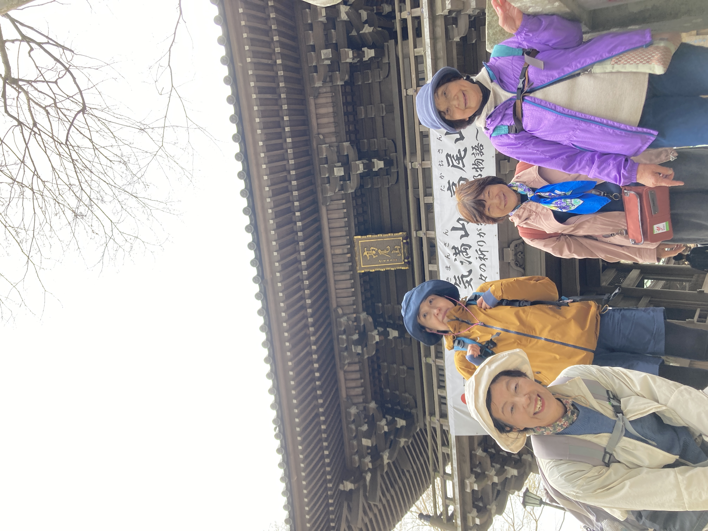
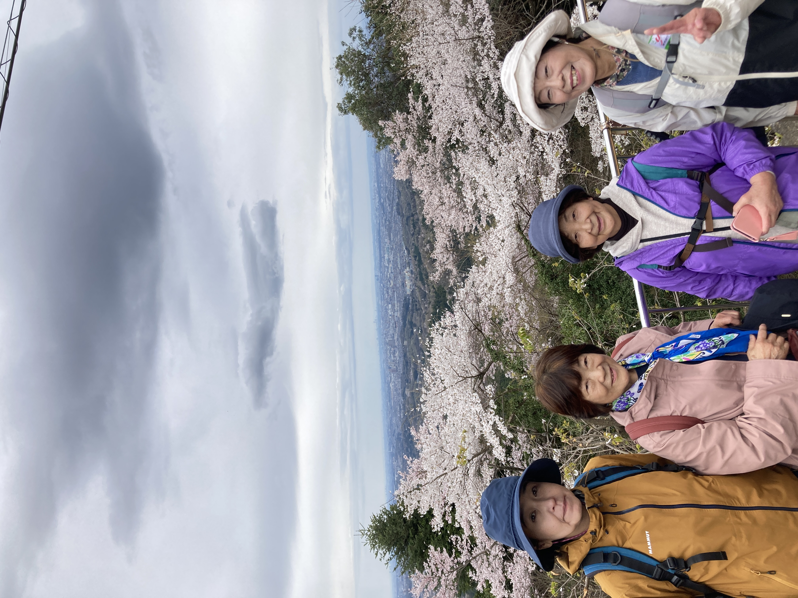

基本情報
場所東京都八王子市
標高599m
難易度初心者向け
日帰り可能
季節通年
ひとことアクセス良好
概要
高尾山は、都心からアクセスしやすく、登山初心者でも歩きやすい人気の山です。 このページでは、自分が訪れたときの写真や感想を中心にまとめ、ルートや所要時間などの詳しい情報はYAMAP側で見られるようにしています。
こうしておくと、サイト側は見た目と記録をきれいに残しつつ、行動ログの細かい情報は外部サービスに任せられるので、更新もしやすくなります。
感想メモ
気軽に自然へ入りたいときに歩きやすく、短時間でも山の空気をしっかり感じられる山です。 季節ごとに景色が変わるので、写真を撮りながら歩くのにも向いていると感じました。
メイン写真

ここをあなたの写真に差し替えて使います。ファイル名は images/takao-main.jpg にするとそのまま表示できます。
写真ギャラリー


追加する場合は images/takao-1.jpg、images/takao-2.jpg のように保存していくと整理しやすいです。
外部リンク
ルート・所要時間・行動ログはYAMAP、写真の投稿や日常的な更新はInstagramへつなぐ形にしています。
今後追加予定
- 季節ごとの写真差し替え
- 訪問日メモ
- 装備メモ
- 見どころの一言メモ